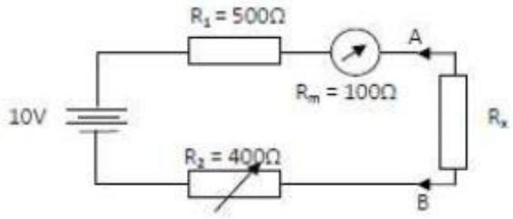
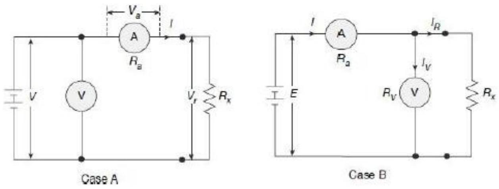

Ohmmeter Example and VM-AM Method Introduction
EXAMPLE
Given PMMC with resistance $100 \Omega$ was using in series ohmmeter. R1 $=500 \Omega$, R2 $=400 \Omega$ and supply voltage $=10 \mathrm{~V}$. When connected with Rx, the reading shows 0.5 mA . Find the value of Rx.
Solution

Voltmeter-Ammeter Method for Measuring Resistance
The voltmeter-ammeter method is a direct application'of ohm's law in which the unknown resistance is estimated by measurement of current (I) flowing through it and the voltage drop (V) across it. Then measured value of the resistance is
This method is very simple and popular since the instruments required for measurement are usually easily available in the laboratory.
Two types of connections are employed for voltmeter-ammeter method as shown below

Example
A voltmeter of $600 \Omega$ resistance and a milliammeter of $0.8 \Omega$ resistance are used to measure two unknown resistances by voltmeter-ammeter method. If the voltmeter reads 40 V and milliammeter reads 120 mA in both the cases, calculate the percentage error in the values of measured resistances if (a) in the first case, the voltmeter is put across the resistance and the milliammeter connected in series with the supply, and (b) in the second case, the voltmeter is connected in the supply side and milliammeter connected directly in series with the resistance.
Solution
The connections are shown in the following figure.
Voltmeter reading $V=40 \mathrm{~V}$
Ammeter reading $I=120 \mathrm{~mA}$ measured resistance from voltmeter and $I$ ammeter readings is given by